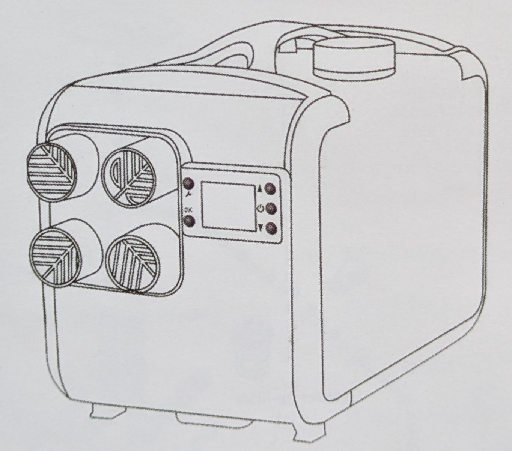
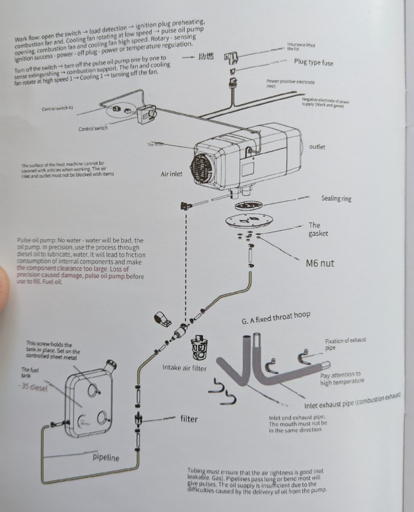
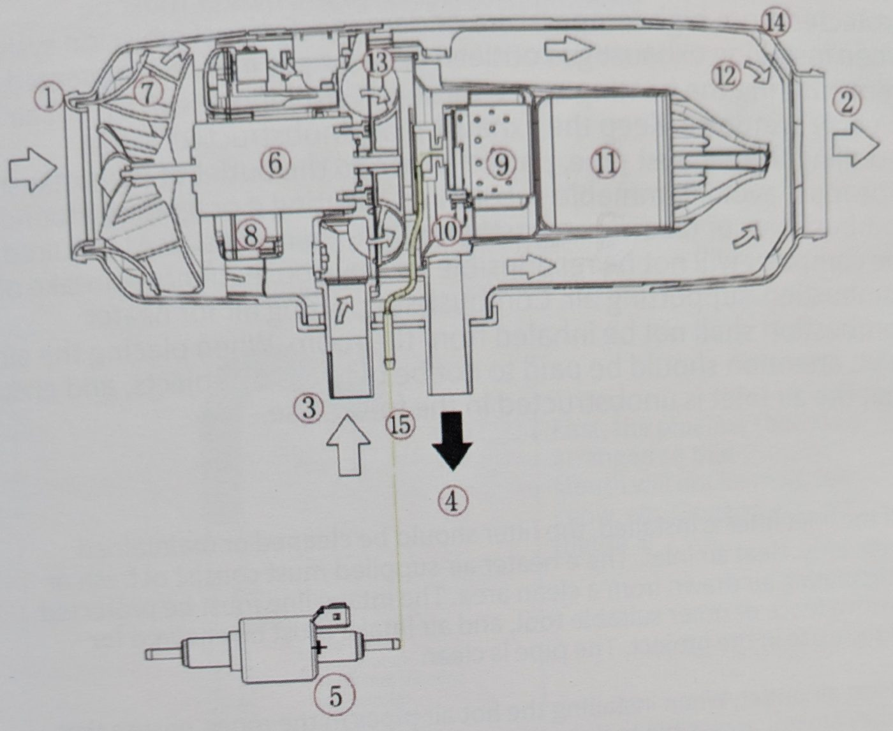
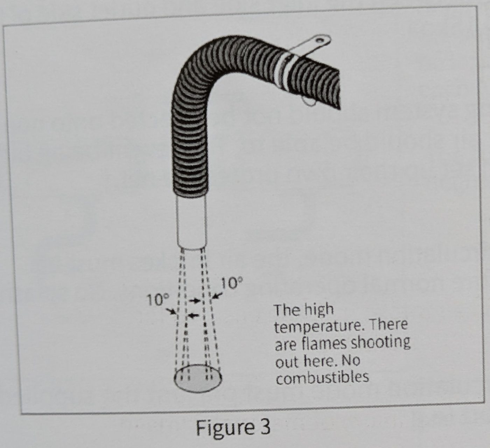
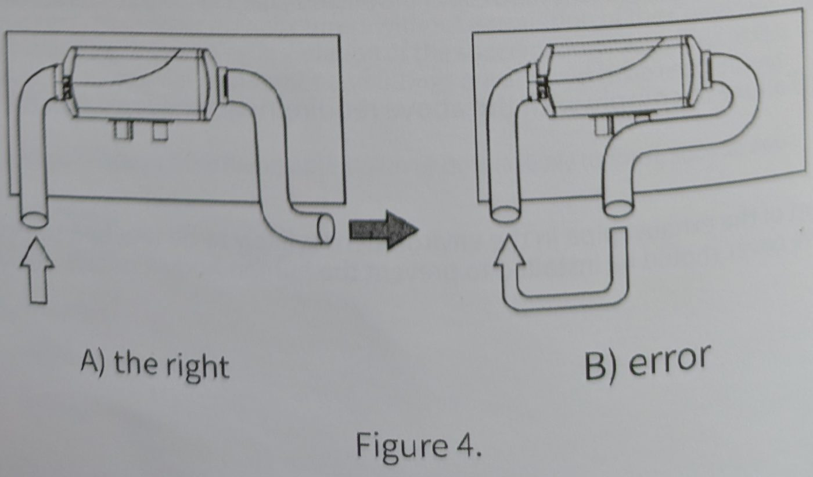
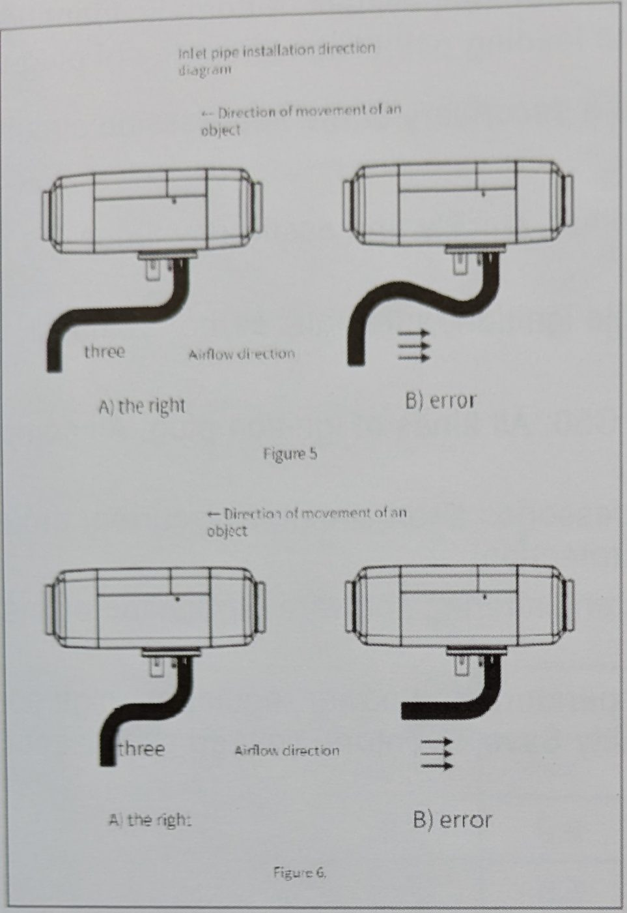
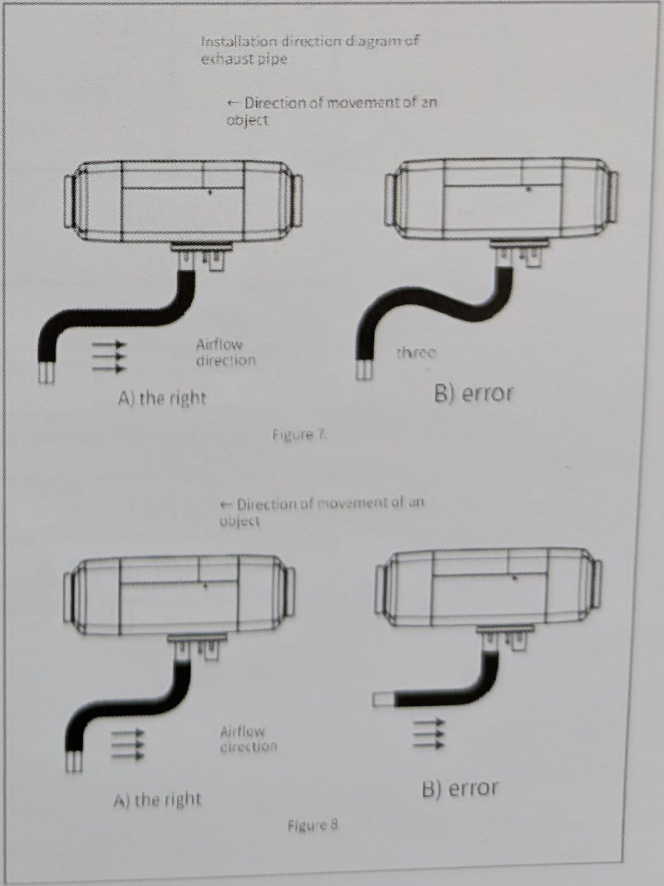
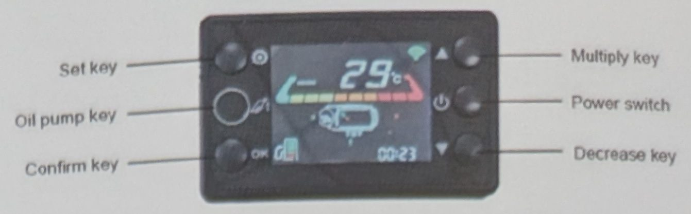
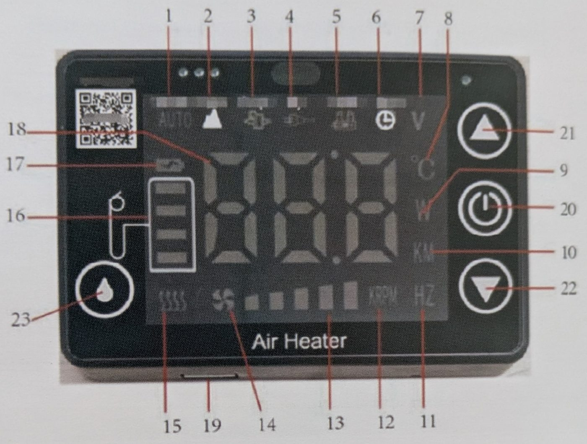

Parking heater Instruction manual


| 図中の表記 | 訳 |
|---|---|
| Insurance lifted the lid / Plug type fuse | ヒューズカバー ／ 差し込み式ヒューズ【訳注：Insuranceは中国語「保険（=ヒューズ）」の誤訳】 |
| Power positive electrode (red) | 電源プラス（赤） |
| Negative electrode of power supply (black and green) | 電源マイナス（黒・緑） |
| Control switch / Control switch A1 | 操作スイッチ（コントローラー）／ 操作スイッチ A1 |
| The host / Air inlet / outlet | 本体 ／ 温風用 吸気口 ／ 吹出口 |
| Sealing ring / The gasket / M6 nut | シールリング ／ ガスケット ／ M6ナット |
| Intake air filter | 燃焼用吸気フィルター |
| filter / pipeline | 燃料フィルター ／ 燃料配管 |
| The fuel tank / -35 diesel | 燃料タンク ／ -35号軽油【訳注：中国の寒冷地用軽油規格。日本では地域・季節に応じて3号・特3号軽油に相当】 |
| This screw holds the tank in place… | このネジでタンクを固定する。固定用の板金に取り付ける |
| G. A fixed throat hoop | G. ホースクランプ（固定バンド） |
| Fixation of exhaust pipe / Pay attention to high temperature | 排気管の固定金具 ／ 高温注意 |
| Inlet exhaust pipe (combustion exhaust) | 燃焼用吸気管・排気管 |

| 1. 温風用 吸気口 | 9. 燃料気化室 |
| 2. 温風 吹出口 | 10. グロープラグ（点火プラグ） |
| 3. 燃焼用 吸気口 | 11. 燃焼室 |
| 4. 排気口 | 12. 熱交換器 |
| 5. 燃料ポンプ | 13. 燃焼用ファン |
| 6. モーター | 14. ヒーター外装 |
| 7. ファン（温風用） | 15. 燃料パイプ |
| 8. 制御基板 | 16. 外装温度センサー |

警告：以上を守らないと火災の原因になります。



| 型式 | 8000W | 5000W | 2000W | |||
|---|---|---|---|---|---|---|
| 加熱媒体 | 空気 | |||||
| 強 | 弱 | 強 | 弱 | 強 | 弱 | |
| 発熱量（kW） | 8.2 | 5.0 | 5.2 | 3.2 | 2.2 | 1.6 |
| 燃料消費量（L/h） | 0.66 | 0.4 | 0.46 | 0.2 | 0.26 | 0.1 |
| 消費電力・運転時（W） 12V/24V | 60 | 28 | 36 | 22 | 26 | 8 |
| 消費電力・起動時（W） | ≦100 | |||||
| 定格電圧 | 12V / 24V | |||||
| 低電圧保護 | 約10.5V（12V機）/ 約21V（24V機）、保護作動までの時間 20秒 | |||||
| 過電圧保護 | 約16V（12V機）/ 約32V（24V機）、保護作動までの時間 21秒 | |||||
| 過熱保護（±10%） | 180℃ | |||||
| 使用周囲温度 | -40℃ ～ +50℃ | |||||
【訳注】原文の「high-grade」は強（高出力）、「resist」は弱（低出力）の誤訳と判断。同じページの中国語の小さな表では5000W・強の消費電力が「48W」となっており、英語表の「36W」と食い違う。過熱保護は180℃だが、故障コードE09の説明では「本体温度260℃超」とあり、こちらも原文どおり併記する。

| 項目 | 状態 | 操作・内容 |
|---|---|---|
| 待機中の表示 | 待機 | 待機状態で確認キーを長押しするとパラメータを表示。L1：通電時間、L2：周囲温度、L3：外装温度、L4：電源電圧、L5：タンク容量。増加／減少キーで表示を切り替え。 |
| キー操作 | 待機モード | 電源ボタン：押すと電源ON 増加キー：温度／ギア ＋ 減少キー：温度／ギア － 確認キー：表示の循環切替 設定キー：パラメータ設定 |
| 運転中 | 電源ボタン：長押しで電源OFF 増加キー：温度／ギア ＋ 減少キー：温度／ギア － 確認キー：表示の循環切替 設定キー：パラメータ設定 | |
| リモコンの登録 | 待機／運転中 | 設定キーと増加キーを同時に3秒長押し → 画面に「--」表示 → この間にリモコンのいずれかのボタンを押すと登録完了。 |
| モード切替 | 運転中 | ギアモード中に増加キーと減少キーを同時長押しで恒温（温度設定）モードへ。恒温モード中に同じ操作でギアモードへ。 |
| 手動給油（呼び水） | 待機中・初回通電時 | 初回、運転を開始していない状態で燃料ポンプキーを押すと手動ポンプモード開始。もう一度押すとポンプ停止。 |
| パラメータ表示 | 運転中 | 画面右下には通常、通電時間を表示。確認ボタンを押すごとに、ファン回転数 → ポンプ周波数 → グロープラグ電力 → タイマー残り時間 → 電源電圧 の順に切替。3秒操作しないと通電時間表示に戻る。 |
| パラメータ設定 （待機中に設定キーを長押しで設定モードへ。増加／減少キーで項目を選ぶ） | P1：タイマー起動 | 設定キーを押して起動タイマーを変更。初期表示は0:00で、タイマーアイコンが点滅。増加／減少キーで30分単位に変更。OKキーで保存し、閲覧状態に戻る。 |
| P2：タイマー停止 | 設定キーを押して停止タイマーを変更。初期表示は0:00で、タイマーアイコンが点滅。増加／減少キーで30分単位に変更。OKキーで保存し、閲覧状態に戻る。 | |
| P3：タンク容量 | 設定キーを短く押してタンク容量を変更。初期表示は5Lで、タンク表示が点滅。増加／減少キーで容量を変え、目標値になったらOKキーで保存し、閲覧状態に戻る。 |
| コード | 内容 | 確認する点 |
|---|---|---|
| E01 | 起動失敗 | ①タンクに燃料があるか ②燃料ポンプが固着して送油できていないか ③燃料経路が詰まっていないか、気泡で送油が途切れていないか |
| E02 | 異常消炎 | ①燃焼に入った後、燃料切れで消火した ②燃料タンクが空 ③燃料経路にエアが入り、送油が途切れる ④吸気管または排気管が詰まっている |
| E03 | 電圧異常 | ①許容範囲：12V機 9～16V、24V機 18～32V ②電源電圧を確認する |
| E05 | 温度センサー故障 | ①基板上の温度センサーの短絡または断線 |
| E06 | 燃料ポンプ故障 | ①ポンプ配線の短絡・断線 ②ポンプ未接続、またはポンプ接続線の短絡・断線 ③ポンプの基板側プラグの緩み ④ポンプ配線の不良、またはポンプ本体の故障 |
| E07 | ファン故障 | ①ファン回路の断線・短絡 ②ファン停止（ホールセンサーが回転を検出しない） ③羽根の引っかかり・固着 ④モーター内部故障 ⑤ファンのプラグがきちんと挿さっていない |
| E08 | グロープラグ故障 | ①プラグ根元の絶縁損傷による短絡 ②プラグの漏電 ③プラグソケットの接触不良 |
| E09 | 高温保護 | ①本体温度が260℃を超えた。吸気口がふさがれていないか ②設置スペースが狭すぎる ③大流量のポンプを誤って接続している ④燃料ポンプの逆止弁からの漏れ |
| E10 | 高温センサー故障 | ①高温センサーの短絡または断線 |
| E18 | 通信故障 | ①スイッチとメイン基板の接続ケーブルのプラグが半挿し（接触不良）、または通信線の断線 |

【訳注】原文の説明文は番号と内容がずれている（10番と11番の対応など、15・17・19番は説明が欠落）。括弧書きは図から推定した内容。
| 項目 | 操作・内容 |
|---|---|
| 起動 | ONボタン（電源）を2秒長押し → 画面に「ON」表示。 |
| 停止 | 電源ボタンを2秒長押し → 画面に「OFF」表示で停止。 |
| 出力アップ | ▲ボタンを押すとギアが上がる。 |
| 出力ダウン | ▼ボタンを押すとギアが下がる。 |
| リモコンの登録 | 停止状態で▲と▼を同時に3秒長押し → 画面に「--」表示 → リモコンのボタンを押す。 |
| 給油モード（呼び水） | 初回通電時、運転していない状態で▲を3秒長押しするとポンプ給油モードに入り、「ポンプ給油の残り時間」を表示。▲を押すと給油停止。 |
| 電圧表示 | 電源ボタンを短く押すと現在の電源電圧と燃料残量を表示。【訳注】原文「The open button shows the current supply voltage and the short oil quantity」から推定。 |
| 恒温モード | 運転中に中央のスイッチキーを押すと、ギアモードと恒温（温度設定）モードを切り替え。 |
| 音声のON/OFF | 操作ボタンを長押しし、画面下部に（1）が出たら音声のON/OFFを切り替え。【訳注】原文が不明瞭。実機で要確認。 |
| 恒温の温度調整 | 恒温モード中、▲で設定温度を上げ、▼で下げる。 |
| 故障コード | 運転中に故障が起きると、故障コードを表示して自動的に保護停止する。 |
| コード | 内容 |
|---|---|
| E01 | 起動失敗：着火工程の後、炎が検出されない。 |
| E02 | 異常消炎：着火に成功した後、何らかの原因で消炎した。 |
| E03 | 電圧異常：許容範囲は12V機 9～16V、24V機 18～32V。 |
| E05 | 吸気温度センサー故障：基板上の温度センサーの短絡または断線。 |
| E06 | 燃料ポンプ故障：ポンプのプラグの緩み・接触不良、回路の短絡・断線を確認。 |
| E07 | ファン故障：ファンの羽根の固着、羽根がセンサーから離れすぎている、ファンの断線。 |
| E08 | グロープラグ故障：プラグの短絡・断線、または漏電。 |
| E09 | 高温保護：本体温度が260℃を超えた。 |
| E10 | 高温センサー故障：高温センサーの短絡または断線。 |
| E14 | ハンドポンプ（燃料ポンプ）を検出できない：ポンプの配線が接触不良でないか確認、または配線・ポンプを交換。【訳注】原文は「water pump」だが燃料ポンプの誤記と思われる。 |
| E18 | 通信故障：スイッチとメイン基板のコネクターの接触不良、または通信ケーブルの断線。 |
ヒーターは次のような原因で回路故障を起こすことがある：接続部の腐食、接触不良、差し込み不良、誤接続、配線・ヒューズの腐食、バッテリー端子の腐食など。使用中は点検・保守に注意し、これらが起きないよう予防すること。